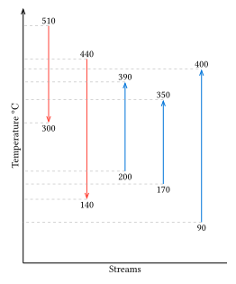

Pinch analysis is examining the composite curve and optimizing the utility costs and heat exchanger costs based on this curve.
The composite curve is the graph of the temperature versus heat load of all hot streams and cold streams, separate lines for each.
The pinch point is the temperature at which the two lines
are at their nearest, or at the lowest Delta T.
The slope of the T-H graph is the inverse of \(F C_P\) where \(F\) is the flowrate and \(C_P\) is the heat capacity at constant pressure. This is from the equation of enthalpy:
\[ \Delta H = F C_P \Delta T \]
The overlap of the hot streams means that there are no heating or cooling just the heat exchanger. If the hot stream has the non-overlapping region then there is a cooling utility required, and the composite is also true which is the non- overlapping region of the hot stream. We can visualize these non-overlaps as heaters and coolers after heat transfer, hence the necessity for heating/cooling utilities.
When there is a phase change, as the hot/cold stream changes to liquid/vapor, the T-H line deviates from a straight line. For a single component stream, the line becomes a complete horizontal line until it changes its phase. (constant temperature)
A composite curve, is the combination of all hot streams or all cold streams, joining their lines. This might be confusing and needs visualization.
Composite curves can be moved and it is by convention that the cold streams are moved. We move curves to lessen the heat of the cooling and heating utilities, but there is a compromise to this since the minimum \(\Delta T\) would be too small and the area of the heat exchanger would be too large. (See Eq 1)
\[ A = \frac{Q}{U \Delta T} \qquad{(1)}\]
To limit this area, a \(\Delta T_{\text{minimum}}\) is set, which is also called as HRAT. (Heat Recovery Approximation Temperature)
A graphical procedure is listed in the lecture:
- Fix HRAT
- Draw the hot composite curve and leave it fixed
- Draw the cold composite curve in such a way that the smallest temperature difference is equal to HRAT
- The temperature at which \(\Delta T = \text{HRAT}\) is the PINCH
- The non-overlap on the right is the Minimum Heating Utility and the non-overlap on the left is the Minimum Cooling Utility
Moving a graph visually is too cumbersome. A Problem Table is devised in the lecture.
- Divide the temperature range into intervals and shift the cold temperature scale (maybe the shift is equal to HRAT[?], the goal here is to lessen the interval I think.)
- Make a heat balance in each interval
- Cascade the heat surplus/deficit through the intervals.
- Add heat so that no deficit is cascaded
- The temperature at 0 heat is the pinch temperature
There are two types of heat sources, the internal and external sources. The internal sources are those that is from the process streams, and the external sources are from the utility streams such most commonly steam, and cold water. The most inefficient plant is one that only uses external sources as a means of bringing the streams to their desired temperatures. Internal energy sources can be added to this plant to minimize the required external energy. This is what adding heat exchangers to the plant does.
| Process stream | Inlet Temp (°C) | Outlet Temp (°C) | Heat capacity rate (kW/K) | Q̇ (kW) |
|---|---|---|---|---|
| cold | 90 | 420 | 10 | 3300 |
| cold | 170 | 350 | 32 | 5760 |
| cold | 200 | 390 | 29 | 5510 |
| hot | 440 | 140 | 27 | 8100 |
| hot | 510 | 300 | 24 | 5040 |
We can calculate the maximum heat required to heat all the cold streams (\(\dot{Q}_\text{heat}\)) and to cool all the hot streams. (\(\dot{Q}_\text{cool}\))
\[ \begin{align} \dot{Q} &= \sum_{i}^{~} \Delta T_i \cdot (\dot{m} C_P)_i \\ \dot{Q}_\text{heat} &= 14570~\text{kW} \\ \dot{Q}_\text{cool} &= 13140~\text{kW} \\ \end{align} \]
Now we separate the intervals.
| Interval Id | Temperature Interval \([^\circ \rm{C}]\) | \(\dot{Q}_\text{cool}\) \([\rm{kW}]\) | \(\dot{Q}_\text{heat}\) \([\rm{kW}]\) | \(\Delta \dot{Q}\) \([\rm{kW}]\) |
|---|---|---|---|---|
| 1 | 510 - 440 | 1680 | 0 | 1680 |
| 2 | 440 - 400 | 1020 | 0 | 1020 |
| 3 | 400 - 390 | 1530 | 300 | 1230 |
| 4 | 390 - 350 | 2040 | 1560 | 480 |
| 5 | 350 - 300 | 2550 | 3550 | -1000 |
| 6 | 300 - 200 | 2700 | 7100 | -4400 |
| 7 | 200 - 170 | 810 | 1260 | -450 |
| 8 | 170 - 140 | 810 | 300 | 510 |
| 9 | 140 - 90 | 0 | 500 | -500 |

Reference:** Rokni, M. (2016). Introduction to Pinch Technology. Technical University of Denmark.